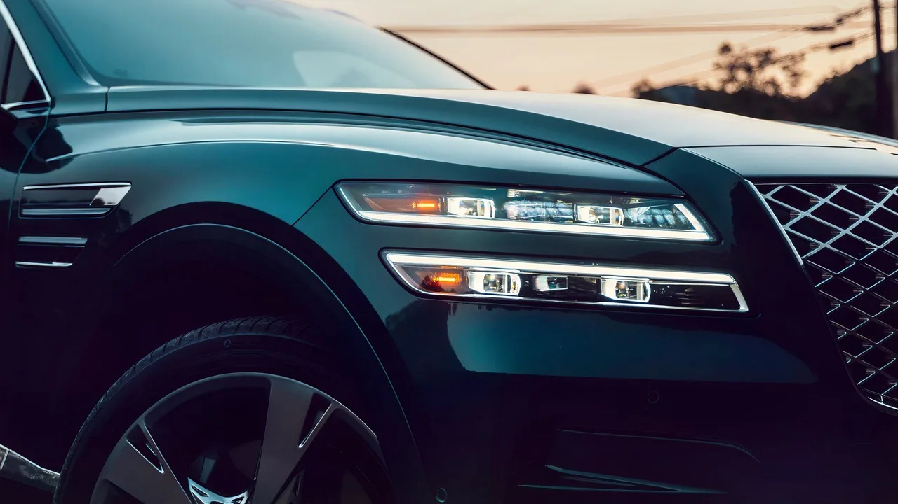
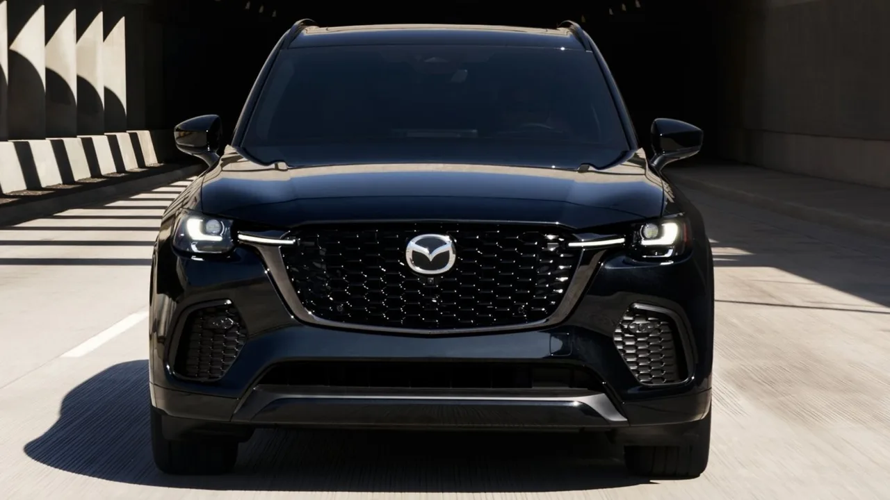
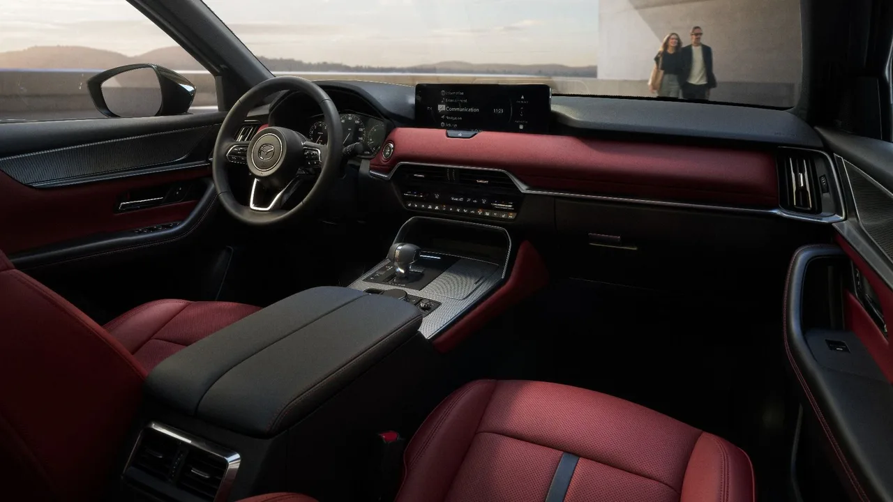
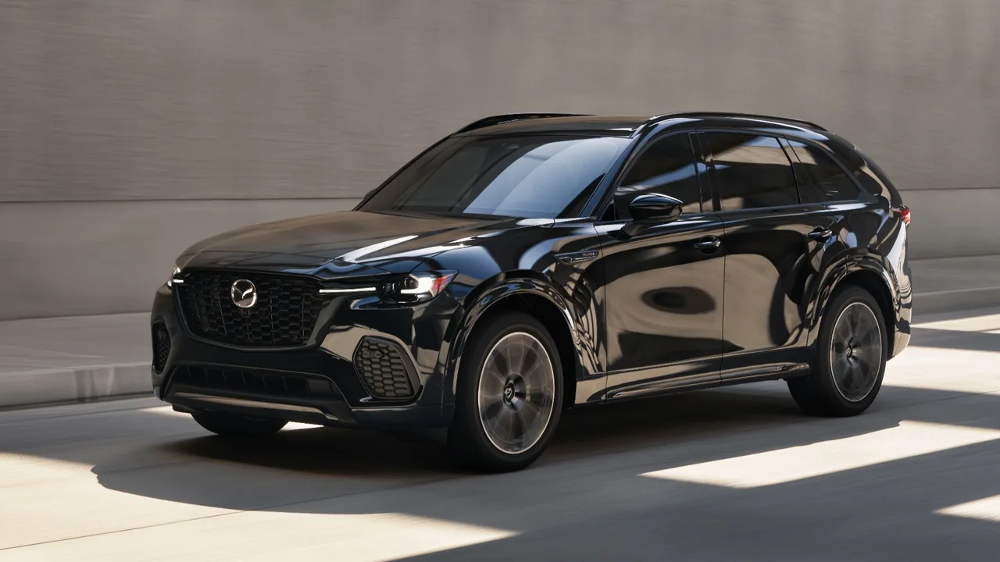

▲ 제네시스 GV80. 럭셔리 SUV 오너들이 이동하는 목적지로 지목된 모델이다
자동차 시장에는 오랫동안 분명한 선이 있었습니다. 주류 SUV와 럭셔리 SUV를 가르는 선입니다.
구분은 쉬웠습니다. 배지를 보면 됐고, 가격표를 보면 더 확실했습니다. BMW X5는 기아 텔루라이드보다 훨씬 비싸고, 그 값만큼의 정교함을 갖고 있다는 것이 통념이었습니다.
그 선이 흐려지고 있습니다.
1. 사라지고 있는 선
시장 전체를 놓고 보면 세그먼트를 나누는 선은 대체로 뚜렷합니다. 주류 SUV와 럭셔리 SUV는 배지뿐 아니라 가격표로도 구분됩니다.
그런데 그 사이가 채워지고 있습니다. 럭셔리 브랜드만큼의 마감과 장비를 갖추면서 가격은 주류에 가까운 모델들이 늘어나면서, 기존 럭셔리 오너들이 실제로 이동하고 있다는 것이 이번 분석의 요지입니다.

▲ 제네시스 GV80. 마감과 장비 수준을 유지하면서 가격대를 낮춘 대표 사례로 꼽힌다 ⓒ CarBuzz
2. GV80이라는 선택
제네시스는 이 구도에서 가장 자주 언급되는 이름입니다. 후발 브랜드라는 위치가 오히려 가격 정책에서 자유도를 줬기 때문입니다.
국내 독자에게는 익숙한 차지만, 미국 시장에서 GV80이 놓인 자리는 조금 다릅니다. 독일 프리미엄 3사와 같은 표에 놓고 비교되는 대상이면서 가격은 그 아래에 있습니다.
📍 배지 값이란 무엇인가
같은 크기, 같은 장비, 비슷한 마감이라면 남는 차이는 배지입니다.
그 배지가 주는 것은 브랜드 이미지와 잔존가치, 그리고 서비스망입니다. 이 세 가지를 2만 달러의 값어치로 볼지 아닐지가 이번 이동의 핵심 판단입니다.
3. CX-70의 접근
마쓰다의 방식은 조금 다릅니다. 브랜드 자체를 럭셔리로 올리기보다, 상위 트림에서 프리미엄에 준하는 구성을 제공하는 쪽입니다.
CX-70은 그 전략이 가장 뚜렷하게 드러나는 모델입니다. 실내 마감과 소재, 파워트레인 구성에서 같은 값의 독일차와 직접 비교되는 지점을 만들었습니다.

▲ 마쓰다 CX-70. 브랜드를 올리는 대신 상위 트림의 구성으로 접근했다 ⓒ CarBuzz

▲ CX-70 실내. 소재와 마감에서 프리미엄 브랜드와 비교되는 지점을 만들었다 ⓒ CarBuzz
4. 2만 달러의 의미
약 2만 달러입니다. 한화로 환산하면 수천만 원 규모이고, 차 한 대 값의 상당 부분에 해당합니다.
| 항목 | 환산 |
|---|---|
| 연료비 | 수년치 주유비에 해당 |
| 보험료 | 장기 계약 기준 상당 기간 |
| 옵션 | 최상위 트림으로 올리고도 남는 금액 |
| 세컨드카 | 소형차 한 대 값에 근접 |
같은 크기의 SUV를 사면서 이 금액을 남길 수 있다면, 배지에 대한 판단이 달라지는 것은 자연스럽습니다.

▲ 실물 앞에서 가격표를 비교하는 순간이 이동의 출발점이 된다 ⓒ CarBuzz
5. 국내 시장에서는
다만 이 분석은 미국 시장 기준입니다. 국내에서는 조건이 다릅니다.
제네시스는 국내에서 이미 프리미엄 브랜드로 자리를 잡은 상태이고, 마쓰다는 정식 판매되지 않습니다. 같은 논리를 그대로 옮길 수는 없습니다.
그러나 구조는 같습니다. 국내에서도 수입 프리미엄과 국산 상위 트림 사이에서 같은 계산이 반복됩니다. 배지 값을 얼마로 볼 것인지의 문제입니다.
6. 남는 질문
이 흐름이 계속될지는 잔존가치가 답합니다. 구매 시점에 2만 달러를 아꼈어도, 되팔 때 그만큼을 더 잃으면 계산은 원점으로 돌아갑니다.
럭셔리 브랜드의 진짜 방어선은 신차 가격이 아니라 중고 시세였습니다. 후발 브랜드의 잔존가치가 어디까지 올라오느냐가 이 이동의 지속 여부를 결정하게 됩니다.